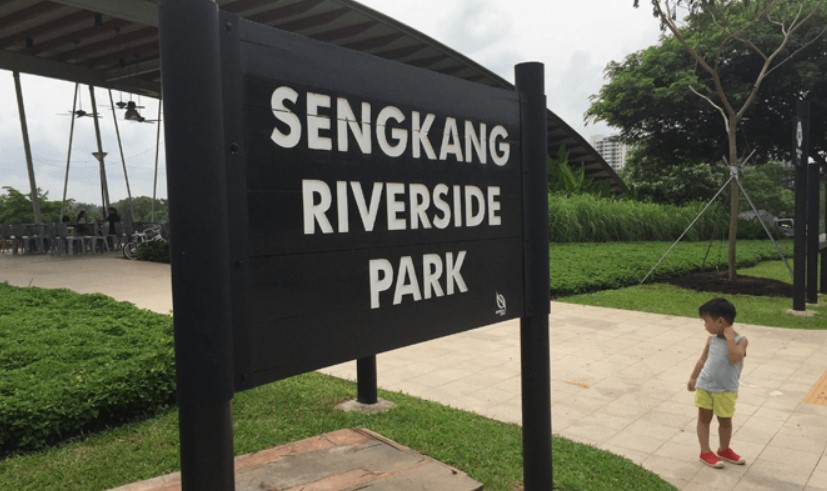
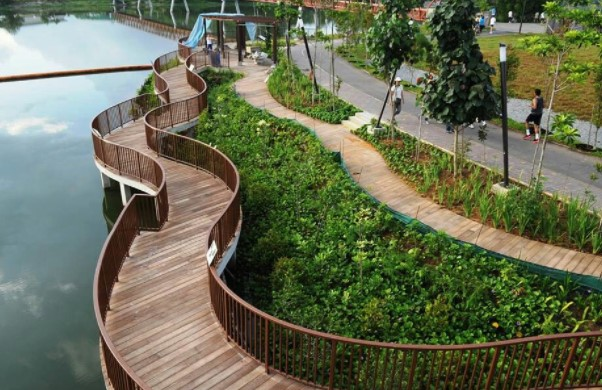
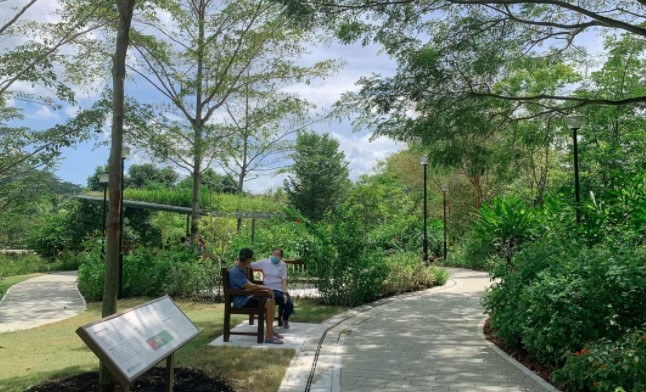
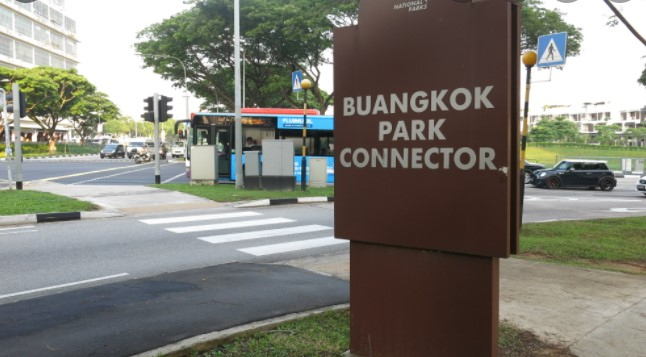
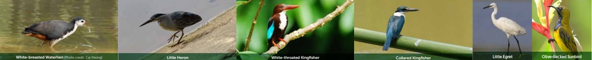
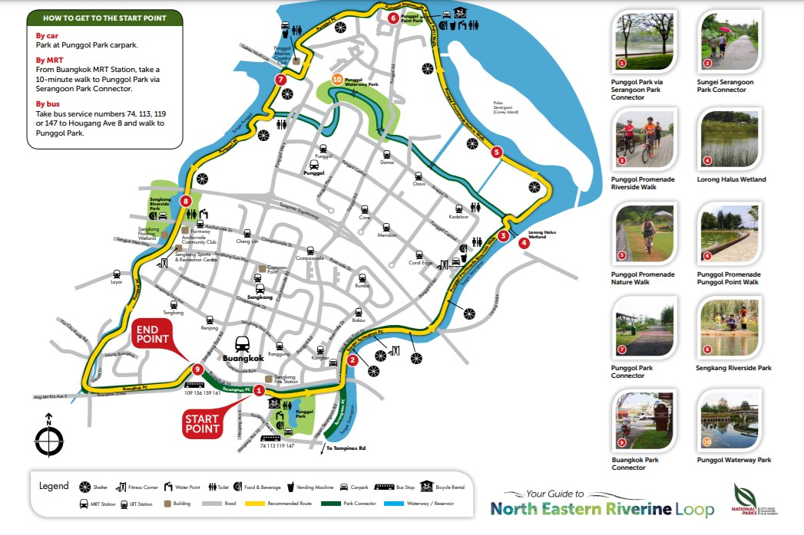

Your guide to North Eastern Riverine Loop
Discover the 26km loop that links four parks,
run through the heartlands of Buangkok, Sengkang and Punggol, and continues into the rustic landscapes of
Punggol Beach, Punggol Promenade and Lorong Halus Wetland
Click image below to go to the specific section in this webpage
Back to top of page
Begin your journey along Serangoon Park Connector and explore Punggol Park’s serene
5-hectare lake. A familiar place of recreation for
families in Hougang, this park houses a number
of facilities that cater to both the young and old,
including play and fitness equipment and even a
plaza for tai chi sessions. Here, a bicycle kiosk is
available where you can rent a bicycle for your
cycling adventure.
Adjacent to Punggol Park is Sungei Pinang, a
tributary of the longer 8km Serangoon Reservoir
in northeastern Singapore. Sungei Pinang is more
than just a canal lined with concrete banks. Many
waterside birds can be seen fishing here when the
water levels is low.
Sengkang Riverside Park is home to a unique wetland that was constructed to collect and filter rainwater naturally through its aquatic plants. Sengkang Floating Wetland (built and maintained by PUB) is separate from Sengkang Riverside Park. Running along the perimeter of the wetland is a Fruit Tree Trail that features 16 types of fruit trees ranging from the familiar mangosteen, pomelo, mango, lime and starfruit, to the more exotic Pond Apple, Island Lychee, Sweetsop, Java Olive and Custard Apple.
Take a detour to the ‘Venice of Punggol’. Integrated within a 4.2km waterway, this beautiful park is a milestone in the transformation of Punggol Town into a waterfront town of the 21st century. Take a history lesson from the heritage panels and Heartwave Wall, where a series of bronze plates recounts Punggol’s development from a plantation area to what you see today. Admire a sunset on Jewel Bridge, whose design was inspired by a jewel atop a ring. Walk across the steel Adventure Bridge, designed to look like a wooden suspension bridge that blends in with the park’s natural setting. Experience the idyllic atmosphere of old Punggol on Kelong Bridge. Its design incorporates visual elements of a kelong, a traditional offshore platform built on stilts and posts, to reflect Punggol’s heritage as a fishing village. The design of Wave Bridge reflects the undulating terrain of the vicinity. Finally, marking the eastern end of the waterway, the elevated Sunrise Bridge conveys the rustic flavour of its surroundings with a modern twist. Get on this structure to enjoy a good view of the sunrise.
Back to top of page
Cross the Sungei Pinang footbridge and take in
picturesque views of Serangoon Reservoir as you
travel along this greenway. The landscape around
Sungei Serangoon Park Connector holds a bioswale
– a natural, chemical-free filtration system for
cleansing rainwater. Blending beautifully into the
greenery, these shallow troughs of vegetation help
control floods by slowing down surface runoff.
Look out for vibrant plant life in the bioswale
such as the Coral Plant (Russelia equisetiformis),
which has an explosive display of scarlet flowers
growing in clusters all year round, hence its other
common name Firecracker Plant. Also keep a
lookout for a particular plant with purplish, feathery
stalks that can reach a height of 1.2m. The distinctive
Purple Fountain Grass (Pennisetum setaceum) is
used in many parts of the world as an ornamental
plant for horticulture and landscaping.
Running parallel to Punggol Reservoir, the Punggol Park Connector links to Punggol Waterway, passes by Sengkang Floating Wetland, and ends at Gerald Drive. The stretch boasts of a rich blend of coastal and mangrove trees lining both sides of the track. Butterfly-attracting plants, including the brightly coloured Common Lantana (Lantana camara) and unassuming Blue Snakeweed (Stachytarpheta indica), are found along various stretches, making the journey delightful with the numerous butterflies fluttering around the area.
This busy park connector serves a variety of users, from commuters to jogging enthusiasts. It runs along residential estates and connects to Punggol Park via Serangoon Park Connector. You may catch a ride home from Buangkok MRT Station, which is just a short distance away
Back to top of page
Teeming with biodiversity, the loop sees many waterside birds fishing here when water levels are low. Here are some common ones that you might see. Identify the Collared Kingfisher (Todiramphus chloris) with its recognisable loud, laughing call. The striated Little Heron (Butorides striatus) might be seen hunched in an egg-like shape, looking intently for prey at the water’s edge. Catch glimpses of the elegant resident Grey Heron (Ardea cinerea), the migratory Little Egret (Egretta garzetta) standing on one foot, and the White-breasted Waterhen (Amaurornis phoenicurus). The White-throated Kingfisher (Halcyon smyrnensis) makes its presence known with its loud calls and striking blue plumage. Move in to observe the bold Olive-backed Sunbird (Nectarinia jugularis) sipping nectar from flowering plants; just remember to keep still and be quiet!
Back to top of page
Click here to download PDF